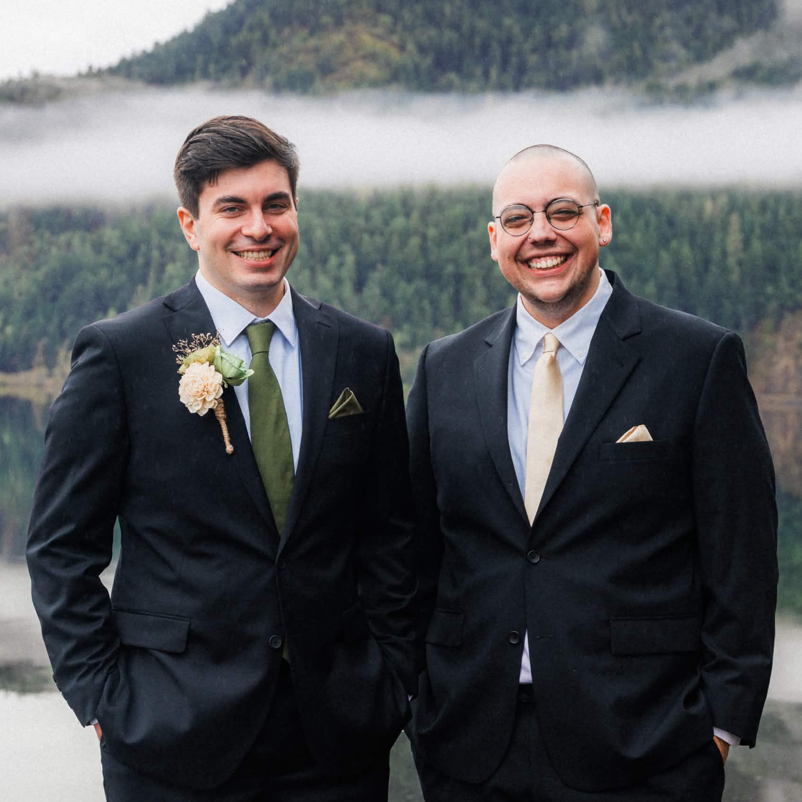
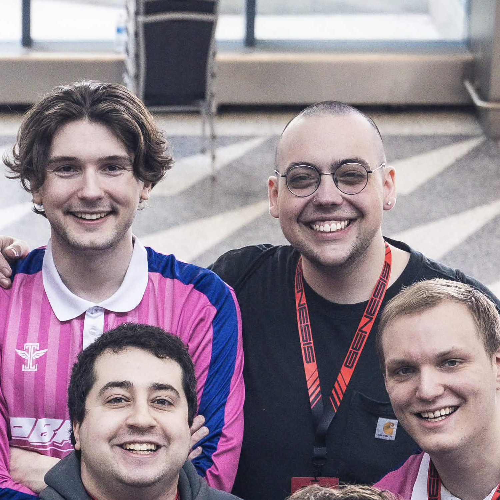
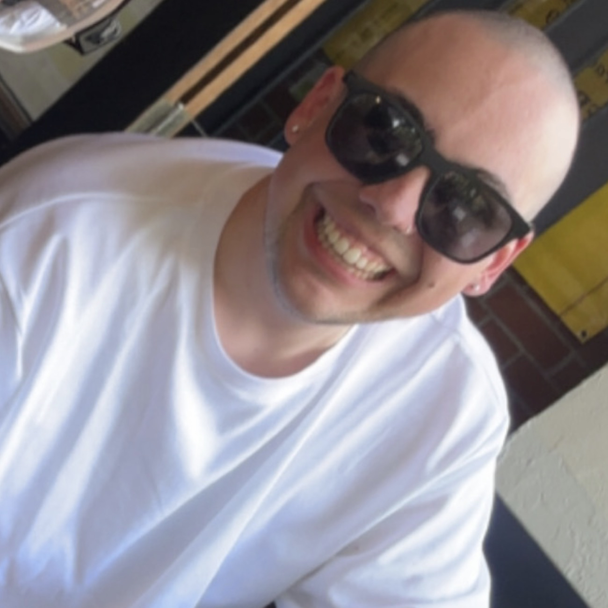

About
I am currently pursuing a Master of Science in Computer Science at Northeastern University, building on a foundation of over a decade managing IT infrastructure and production systems. Before moving into software engineering, I spent years designing, securing, and maintaining the enterprise networks that keep businesses running. This operational background gives me a unique perspective on development. I do not just write code; I understand how applications behave in production environments, how they scale across networks, and how to architect solutions that are both resilient and maintainable.

Professional History
My professional journey is rooted in six years at 1st Security Bank, where I advanced from Help Desk I to a Tier III escalation point and de facto team lead. I took ownership of complex systems and large scale implementation projects, steering everything from Microsoft Office 365 migrations and branch acquisitions to deploying Brightmetrics for contact center analytics. My daily responsibilities involved managing enterprise networking, diving into deep packet analysis, and administering Active Directory, Microsoft Entra, and Windows Server environments while automating tasks with PowerShell.
Realizing my passion leaned heavily toward building rather than just maintaining, I completed a Full Stack Web Development Bootcamp at the University of Washington. This rigorous program bridged the gap between my IT operations background and my current focus on software architecture. It allowed me to translate my deep understanding of systems and lifecycle management into developing scalable, full stack web applications.
Skills
On the development side, my stack spans both frontend and backend technologies. I build responsive user interfaces using HTML, CSS, JavaScript, React, Tailwind, and Bootstrap, and I also have experience designing desktop applications with Java Swing. For backend and core logic, I write in Python, Java, C, and JavaScript. I am comfortable implementing complex data structures and building out real time, full stack applications utilizing Flask, WebSockets, and PostgreSQL databases.
My infrastructure and operational skill set is just as robust, heavily informed by both my homelab and enterprise IT career. I frequently deploy and manage applications using Linux, Docker, Linux Containers, and Proxmox. I configure headless Ubuntu servers and establish secure networking through VPNs. Beyond the lab, I bring extensive production experience with Microsoft Server, Active Directory, Entra, PowerShell scripting, and network packet analysis, giving me complete visibility from the code down to the bare metal.


Personal Life
Outside of code and infrastructure, I am deeply involved in the competitive Super Smash Bros. Melee scene. I regularly compete in Pacific Northwest tournaments and travel across the country for major events. I'm constantly analyzing VODs, coaching, and practicing myself. When I am taking a break from Melee, you can usually find me playing guitar and learning folk punk and Americana songs.
I'm a big fan of the gym, and a bigger fan of relaxing in the sauna at the end. At home, my downtime is shared with my cat Mermaid, who requires some careful supervision to keep her from chewing through my loose computer cables.